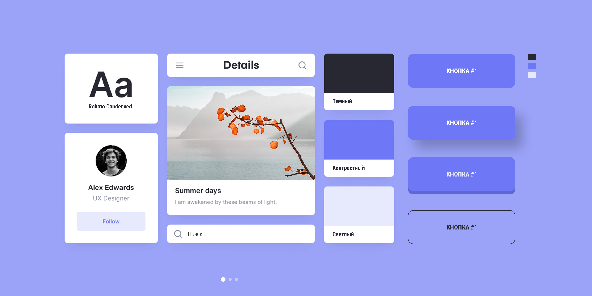
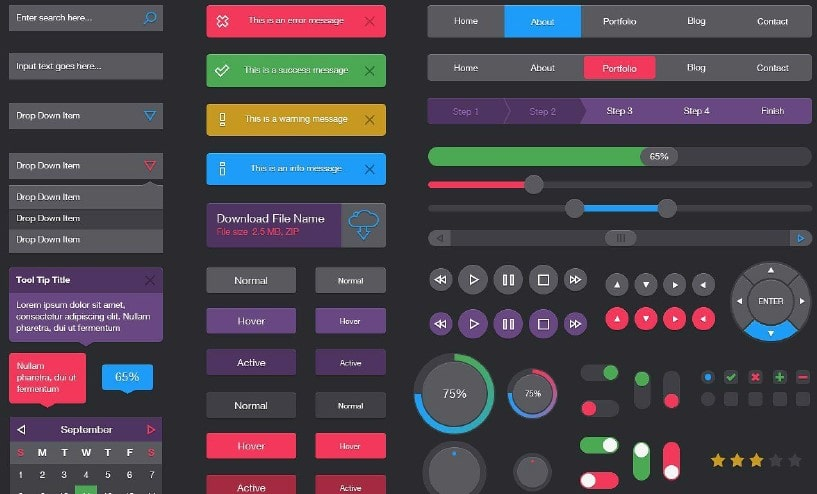
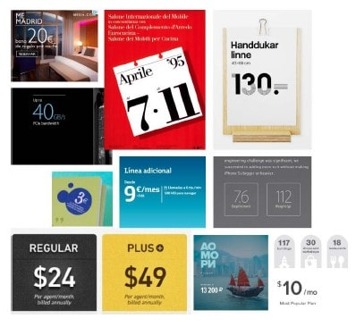

UI и Иконки
Иконки
- svgrepo - svg иконки
- flaticon
- icons8.ru
- icons8.com - Анимированные иконки
- material icons - material svg иконки
- ionic.io
- streamlinehq.com
- fontawesome
- materialdesignicons
- https://emojipedia.org/ - символьные иконки
- emojio.ru | getemoji.com | freecodecamp.org - Emoji (текстовые символьные иконки)
- W3schools | Unicode-table | Html5book - Символы
Sharing
Favicons
- realfavicongenerator - Генератор фавиконок
- favicons-webpack-plugin - Плагин для Webpack
UI-фреймворки
- Material UI от Google
- Bootstrap от Facebook
- Ant Design
- Bulma
UI-kit
Макет с расположением на нем состояние элементов пользовательского интерфейса. В него входят:
- ТИПОГРАФИКА (заголовок, подзаголовок, наборный текст, ссылки, состояние ссылок при наведении)
- КНОПКИ, их состояния (кнопки - один из самых важных элементов, ваоидация)
- ЭЛЕМЕНТЫ ФОРМ, их состояния (поля, чекбоксы, радиобаттоны)
- ПОП-АПЫ, АЛЁРТЫ
- ПАГИНАЦИЯ, ХЛЕБНЫЕ КРОШКИ
- ПРЕЛОАДЕР
- МЕНЮ, НАВИГАЦИЯ, САЙДБАР
Интерфейс - то, как пользователь взаимодействует с чем-либо (пульт телевизора, кран в душ. кабине, форма на сайте).
Flat
Предпочтительный для современной разработки. Минималистичный дизайн, без лишних эффектов.
Релизм / Скевоморфизм

Стиль, при котором элементы интерфейса максимально приближены к реальным (скевоморфизм, версии OC от Apple в 00-ых). Его достаточно тяжело разрабатывать.
Иконки
- Человек мыслит образами, и иконки должны помогать создавать правильный образ
- Иконки нужно применять так же в описании этапов работы компании/услуги
- Все иконки должны быть в едином стиле
- Важно не переборщить с иконками
- Анимация для иконок имеет место быть, но должна быть легкой
- Навигационные иконки (Вверх, вниз, пролистать, Влево, вправо (карусель), Иконки соц. сетей, Корзина)
- Если иконка навигационная - нужно создать эффект наведения
- Информационные иконки (Иконки преимуществ. Пример, грузовик - доставка)
- 4 основных СТИЛЯ иконок:
- линейные (универсальные))
- иллюстрации (по тематике)
- объёмные (устаревшие)
- простые (галочки, крестики, булеты, точки и т.д.)
Формы
КНОПКИ

Должно быть равенство отступов:
c = высота шрифта;
a1 = a2 = a (верт. отступ);
b1 = b2 = b (гор. отступ);Должны соблюдаться правила:
a > c, a <= 2c;
b >= a, b <= 3a;
- Самая важная кнопка выглядит соответствуеще.
- Тёплые тона притягивают.
- Если поля формы достаточно коротки, то есть смысл задать кнопке ширину как у полей
- Нужно повторять призыв к действию, дублировать кнопку в различных блоках
- Правильно располагать НАЗАД-ВПЕРЁД, а не ВПЕРЁД-НАЗАД
- В большие кнопки легче попасть, можно использовать маленький кегль, много пространства в кнопке выглядит хорошо. Большие внутренние отступы. - Отделяйте главные действия от второстепенных. В кнопках тоже должна быть иерархичность. Не должно быть на одном экране несколько одинаковых кнопок.
- Кнопки должны повторять геометрию дизайн-концепции. С закругленныи краями или с прямыми зависит от концепта
- В кнопках текст смотриться лучше всеми заглавными буквами!
ТЕКСТОВЫЕ ПОЛЯ
Меньше полей, менше кликов. Функциональные кнопки можно отображать при наведении (например на строку товара в таблице)
Если полей не много, то имеет смысл сразу их показывать без поп-апов
Чекбоксы и радио-кнопки лучше в столбик, в строчку не удобно для пользователей
*- такие звёздочки уже не рисуютГруппировать поля, схожие по смыслу в отдельные блоки с заголовками
Постепенное раскрытие действий, по мере заполнения
Форма как предложение, заголовок - подлежащее, кнопка - сказуемое
Избегать повторений слов в форме
Не нужно заставлять пользователей вводить излишнюю информацию
Лейблы лучше располагать над полями, если рядом с полями, то лучше выравнивать по правому краю, чтобы не было пустот
ЧЕКБОКСЫ, РАДИОБАТТОНЫ, СЕЛЕКТЫ
Если вариантов выбора менее 6, то лучше делать не select, а радио-кнопки
Радио-кнопки лучше располагать столбиком, удобно для пользователей
Подтверждение по умолчанию (checked)
Фактойды
Миниформаты, цитаты, фактойды, реклама применяются для разнообразия в композиции. Это утверждение, представляемое в прессе, но без источника и подтверждения, целью которого является привлечение внимания.